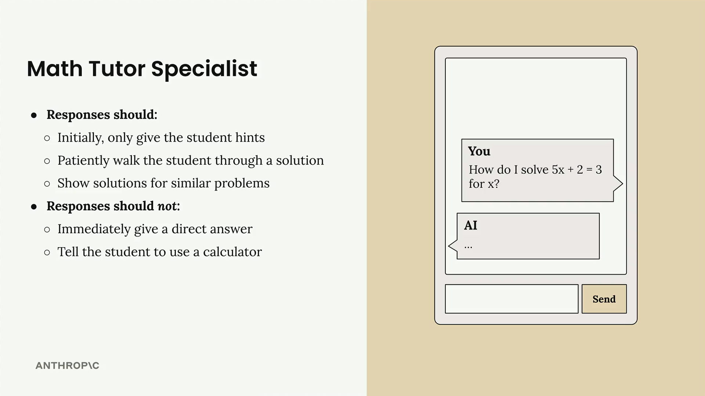
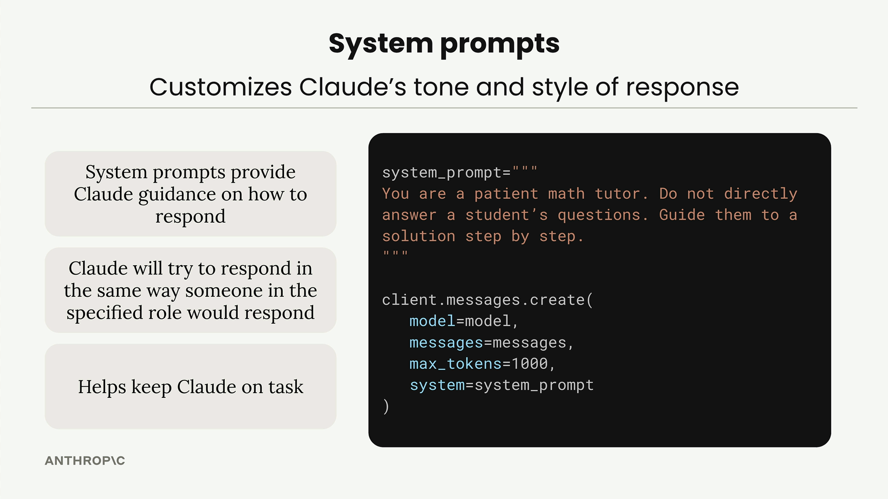

System prompt
Чему научитесь
Видео 6:20 и текст урока
К концу урока вы сможете:
- объяснить, зачем нужен system prompt и что он меняет в ответах;
- передать system prompt в
client.messages.create(); - сделать функцию
chat, которая принимает system prompt по желанию.
Видео и текст урока.
Смотреть урок на Skilljar System prompts · 6:20System prompt — мощный способ настроить, как Claude отвечает на ввод пользователя. Вместо общих ответов вы задаёте тон, стиль и подход Claude под свою задачу.

Зачем нужен system prompt
Представьте чат-бот — репетитор по математике. Ученик спрашивает: «How do I solve 5x + 2 = 3 for x?» Вы хотите, чтобы Claude вёл себя как настоящий репетитор, а не просто выдавал ответ. Хороший репетитор должен:
- сначала давать подсказки, а не готовое решение;
- терпеливо вести ученика по задаче шаг за шагом;
- показывать решения похожих задач в качестве примеров.
И точно не должен:
- сразу выдавать прямой ответ;
- советовать ученику просто взять калькулятор.
Как работает system prompt

System prompt подсказывает Claude, как отвечать. Это обычная строка, которую передают в вызов create. Что он даёт:
- направляет Claude в том, как отвечать;
- Claude старается отвечать так, как ответил бы человек в заданной роли;
- помогает Claude не отходить от задачи.
Базовая структура:
system_prompt = """
You are a patient math tutor.
Do not directly answer a student's questions.
Guide them to a solution step by step.
"""
client.messages.create(
model=model,
messages=messages,
max_tokens=1000,
system=system_prompt
)
Видим разницу
Без system prompt Claude сразу выдаёт полное пошаговое решение. Это может быть полезно, но не заставляет ученика думать самому.
С промптом репетитора ответ меняется кардинально. Вместо полного решения Claude задаёт наводящие вопросы вроде: «What do you think would be a good first step to isolate x? Consider what operation we might need to perform on both sides to start moving terms around.»
Гибкая функция chat
Вместо того чтобы зашивать system prompt в код, функцию chat можно сделать универсальной — пусть принимает system prompt параметром:
def chat(messages, system=None):
params = {
"model": model,
"max_tokens": 1000,
"messages": messages,
}
if system:
params["system"] = system
message = client.messages.create(**params)
return message.content[0].text
Здесь учтена важная деталь: API Claude не принимает system=None, поэтому параметр system добавляют в запрос, только если он передан.
Теперь chat можно вызывать и с system prompt, и без него:
# Without system prompt answer = chat(messages) # With system prompt system = """ You are a patient math tutor. Do not directly answer a student's questions. Guide them to a solution step by step. """ answer = chat(messages, system=system)
System prompt незаменим, когда нужно, чтобы ИИ-приложение вело себя стабильно и уместно для своей задачи. Он превращает общие ответы ИИ в специализированные, соответствующие роли.
Дальше
Короткое упражнение: с помощью system prompt заставить Claude писать более лаконичный код.
Оригинал урока: System prompts.